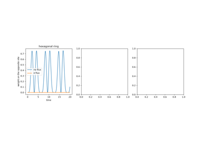
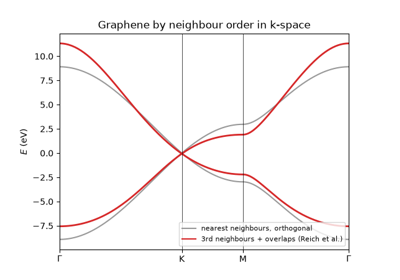
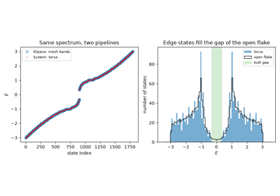
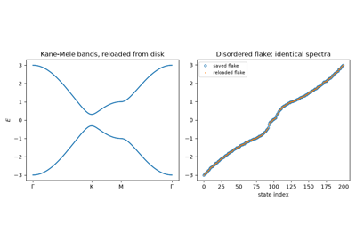

Examples#
Runnable scripts demonstrating the conceptual breakthroughs behind tbkit, from Bloch’s band theory to Floquet topological insulators – see History for the full chronology each script illustrates.
See also the narrative walkthrough: Tutorial.
Each script in this gallery is self-contained and can be run directly with
python examples/<section>/<script>.py. Every script also carries an
RST module docstring as its title/description and uses # %% markers
to split narrative text from code, which is exactly what Sphinx-Gallery
renders into the pages below – the script is the source of truth for
what you see, not a copy of it. Every numeric claim a script’s narrative
makes is checked with an assert right there in the code – nothing is
asserted in the docs that isn’t also verified in code.
Sections#
tight_binding – the generic real-space/reciprocal-space machinery: a graphene flake and its Bloch band structure, including Wallace’s 1947 linear (Dirac) dispersion near the K point, and the physics behind the 2004 isolation of graphene.
orbitals – several orbitals per site: Slater-Koster bond integrals between s, p and d orbitals, with non-orthogonal bases.
three_dimensions – 3D lattices: the Anderson metal-insulator transition and Weyl semimetals with their Fermi arcs.
magnetic_field – the Peierls substitution: gauge-invariant plaquette fluxes, an Aharonov-Bohm ring’s flux-periodic spectrum, Landau levels, and the fractal Hofstadter butterfly.
strain – strain-induced pseudo-magnetic fields in graphene.
disorder – Anderson localization: the Inverse Participation Ratio vs. disorder strength, and an extended state next to a localized one.
topology – topological band theory: the SSH model and its Zak phase, the Haldane model’s Chern number, the TKNN Hall conductance, the Kane-Mele Z2 invariant (Wannier-centre flow and Fu-Kane parities), the Thouless pump, the quantum metric, the local Chern marker, the tenfold way, and diabolical points.
hall_effects – Hall conductivities at any Fermi level: the anomalous Hall effect of the Haldane model (in k-space, and in real space with disorder by the kernel polynomial method) and the intrinsic spin Hall effect of the Kane-Mele model.
flat_bands – the kagome and Lieb lattices’ exactly flat bands, the natural home for strong-correlation physics via Lieb’s theorem.
correlations – the Hubbard model in mean field: zigzag-edge magnetism in graphene and Lieb’s theorem.
superconductivity – the Bogoliubov-de Gennes formalism and the Majorana end modes of the Kitaev chain.
transport – Landauer conductance through a device between semi-infinite leads, and the quantized steps of a point contact.
large_scale – sparse solvers and the kernel polynomial method for lattices of hundreds of thousands of sites.
dynamics – real-time wavepacket propagation: Bloch oscillations and the Wannier-Stark ladder under a uniform tilt.
non_hermitian – PT symmetry, exceptional points, the non-Hermitian skin effect with its generalized Brillouin zone, and exceptional points in momentum space: vorticity, exceptional rings, bulk Fermi arcs, encircling, and biorthogonal Chern numbers.
floquet – periodically driven lattices: a Floquet Chern insulator made with circularly polarized light, and anomalous Floquet phases with edge states despite zero Chern numbers.
models – building, bridging and saving models: hoppings by neighbour order in k-space (third-nearest-neighbour graphene with overlaps), and bridges between the real-space and k-space pipelines (the Haldane model on a torus), models saved to and reloaded from disk, and maximally localized Wannier functions: graphene’s pi bands imported from a Wannier90 file.
higher_order – higher-order topology: the Benalcazar-Bernevig-Hughes quadrupole insulator, its nested Wilson loop, zero-energy corner states and fractional corner charges.
moire – supercells, band unfolding and the spectral function of disordered supercells, and twisted bilayers: the flat bands of magic-angle twisted bilayer graphene.
optics – the optical response of Bloch bands: the Kubo-Greenwood conductivity and graphene’s universal absorption, the Berry curvature dipole of the nonlinear Hall effect, and the shift current of the bulk photovoltaic effect.
Correlations#
Interacting electrons, in the Hartree-Fock mean-field approximation of the Hubbard model: the magnetism of graphene’s zigzag edges, and Lieb’s theorem on the total spin of bipartite lattices. The non-collinear mean field finds the 120-degree order of the frustrated triangular lattice.

The Hubbard Model: Magnetism of Graphene’s Zigzag Edges

Lieb’s Theorem: The Total Spin of Graphene Triangles

Frustrated Magnetism: the 120-Degree Order of the Triangular Hubbard Model
Disorder#
Anderson localization: the Inverse Participation Ratio vs. disorder strength, and an extended state shown side by side with a localized one.

Dynamics#
Real-time wavepacket propagation: Bloch oscillations and the Wannier-Stark ladder under a uniform lattice tilt.


Wave Propagation: Interference on a Ring and a Trapped Domain-Wall State
Flat Bands#
The kagome and Lieb lattices’ exactly flat bands, the natural home for strong-correlation physics via Lieb’s theorem.

Floquet#
Periodically driven lattices: quasienergies, the Floquet Hamiltonian, a Chern insulator engineered with circularly polarized light, and anomalous Floquet phases, whose edge states the winding number counts while every Chern number vanishes.

Anomalous Floquet Topological Phases: Edge States With Zero Chern Numbers

Floquet Engineering: A Chern Insulator From Circularly Polarized Light
Hall effects#
Hall responses at any Fermi level, from the Berry curvature of the bands: the anomalous Hall conductivity of the Haldane model (its quantized plateau in the gap, and its non-quantized value in the bands), the same plateau surviving disorder in a real-space Kubo-Bastin (kernel polynomial) calculation on a torus, and the intrinsic spin Hall conductivity of the Kane-Mele model with its departure from quantization under Rashba coupling.

The Anomalous Hall Effect in Real Space: a Disordered Chern Insulator

The Anomalous Hall Effect: from the Anomalous Velocity to the Berry Phase

The Intrinsic Spin Hall Effect: Kane-Mele Plateau and Rashba Coupling
Higher-Order Topology#
Topological phases beyond dipoles: Wannier sectors, nested Wilson loops, the quantized quadrupole moment of the Benalcazar-Bernevig-Hughes model, and the zero-energy corner states and fractional corner charges it binds.

Quantized Electric Quadrupole Insulators: the Benalcazar-Bernevig-Hughes Model
Large lattices#
Lattices far beyond dense diagonalization: sparse neighbour search, shift-invert eigensolvers, and the kernel polynomial method, which turns spectral densities and conductivities of hundreds of thousands of sites into a few hundred sparse matrix-vector products.

The Kernel Polynomial Method: Graphene With Vacancies, 45,000 Sites
Magnetic Field#
The Peierls substitution on a lattice: gauge-invariant flux through the plaquettes, an Aharonov-Bohm ring’s flux-periodic spectrum, Landau levels of the square lattice and of graphene, and the self-similar, fractal Hofstadter butterfly swept continuously in flux.


The Peierls Substitution: Flux Through the Plaquettes, in Any Gauge
Building, Bridging and Saving Models#
Tools that make realistic models easy to build and move around: Bloch
Hamiltonians set up by neighbour order (1st, 2nd, 3rd, … neighbours) as
in real space, bridges between the real-space System
and the reciprocal-space KSpace pipelines, models
saved to and loaded from disk, and tight-binding models imported from
Wannier90’s _hr.dat files.

Maximally Localized Wannier Functions: Graphene from a Wannier90 File

Hoppings by Neighbour Order in k-Space: Third-Nearest-Neighbour Graphene

From Real Space to k-Space and Back: the Haldane Model on a Torus

Saving and Reloading Models: a Kane-Mele Model on Disk
Supercells and Moiré Structures#
Supercells of periodic models: band unfolding and the spectral function of disordered supercells, and the commensurate moiré cells of twisted bilayers, down to the flat bands of magic-angle twisted bilayer graphene.

Band Unfolding: the Effective Band Structure of a Disordered Supercell

Magic-Angle Twisted Bilayer Graphene: Flat Moiré Bands
Non-Hermitian lattices#
Lattices with balanced gain and loss: PT-symmetric spectra that stay real up to a threshold, the exceptional points at which eigenvalues and eigenvectors coalesce, the Petermann factor that measures how far the eigenbasis has been skewed, and the selective amplification of a topological edge mode. With non-reciprocal hoppings: the non-Hermitian skin effect, its spectral winding number, and the generalized Brillouin zone that restores the bulk-boundary correspondence. In two dimensions: exceptional points in momentum space, their charges (eigenvalue vorticity and discriminant winding), the pair of EPs and the bulk Fermi arc into which a Dirac point splits, exceptional rings, encircling an EP (the state swap and the four-loop return), and the biorthogonal Chern number of a line-gapped band.

Exceptional Points in Momentum Space: Encircling an EP versus a Dirac Point

Exceptional Points in Momentum Space: Vorticity and Exceptional Rings

Exceptional Points in Momentum Space: the Chern Number until the Line Gap Closes

Exceptional Points in Momentum Space: Complex Bands and the Bulk Fermi Arc

PT Symmetry, Exceptional Points, and a Selectively Amplified Edge Mode

The Non-Hermitian Skin Effect and the Generalized Brillouin Zone
Optics#
Linear and nonlinear optical response of Bloch bands: the Kubo-Greenwood optical conductivity and the universal absorption of graphene, the Berry curvature dipole behind the nonlinear Hall effect, and the shift current of the bulk photovoltaic effect.

The Bulk Photovoltaic Effect: the Shift Current of Gapped Graphene

The Universal Absorption of Graphene: Opacity Defined by the Fine-Structure Constant

The Nonlinear Hall Effect: the Berry Curvature Dipole of a Tilted Dirac Cone
Orbitals#
Beyond one orbital per site: Slater-Koster bond integrals between s, p and d orbitals, non-orthogonal bases, and the band structures they give.

The Slater-Koster Method: Graphene’s sigma and pi Bands
Strain#
Mechanical strain as a gauge field: triaxial strain bends graphene’s bonds into a pseudo-magnetic field that quantizes the Dirac spectrum into Landau levels while leaving the Hamiltonian real, and therefore time-reversal symmetry intact.

Strain as a Gauge Field: Pseudo-Landau Levels in Graphene
Superconductivity#
Superconductors in the Bogoliubov-de Gennes formalism: particle-hole symmetric spectra, and the Majorana zero modes at the ends of Kitaev’s p-wave chain. The self-consistent BCS gap equation in real space, with its universal ratio Delta(0)/T_c = 1.764 and the proximity effect.

The BCS Gap Equation: Delta(T) and the Universal Ratio Delta(0)/T_c = 1.764

Three dimensions#
Lattices in 3D space: the Anderson metal-insulator transition, which exists only in three dimensions, and Weyl semimetals, whose band touchings are monopoles of Berry curvature with Fermi-arc surface states.
The Scaling Theory of Localization: the 3D Anderson Transition

Weyl Semimetals: Monopoles of Berry Curvature and Fermi Arcs
Tight-Binding#
The generic real-space and reciprocal-space machinery: the square
lattice, whose single band is simple enough to check by hand, as the
smallest complete illustration of Bloch’s theorem; a graphene flake
diagonalized directly and its Bloch band structure along a k-path,
including Wallace’s 1947 linear (Dirac) dispersion near the K point;
the physics behind the 2004 isolation of graphene – flakes, edge
states, and the Berry phase of pi of its Dirac cones; and
tbkit.plot.Plot’s lattice, spectrum, density-of-states, and
eigenstate-intensity plots.

Building Finite Lattices: Unit Cells, Cuts, and Lattice Arithmetic

Defects and Impurities in a Graphene Flake: Vacancy Zero Modes and Bound States

Graphene: Real-Space Flake and Reciprocal-Space Bands

The Isolation of Graphene: Flakes, Edges, and a Berry Phase of pi

The Square Lattice: Bloch’s Theorem in its Simplest Form

Topology#
Topological band theory: the SSH model’s bulk-boundary correspondence and its Zak phase, the Haldane model’s Chern-number phase transition and Berry curvature, the TKNN quantized Hall conductance of the Hofstadter bands, zigzag graphene and Kane-Mele helical edge states cut from ribbons, the Kane-Mele Z2 invariant from Wannier-centre flow and the Fu-Kane parity criterion, the surface Dirac cone of a 3D topological insulator (surface spectral function of a semi-infinite crystal), the Thouless quantum pump’s exactly quantized charge transport, a topological (Chern) flat band on the kagome lattice, the quantum metric of a Bloch band, the local Chern marker of a disordered flake, the tenfold-way classification of tight-binding models by their symmetries, and the diabolical points (conical intersections with a Berry phase of pi) of a two-parameter family.

Three-Dimensional Topological Insulators: the Surface Dirac Cone

Diabolical Points: Conical Intersections in a Two-Parameter Family


The Fu-Kane Parity Criterion: Z2 from Inversion Eigenvalues

The Haldane Model: Berry Curvature and a Topological Phase Transition


The Kane-Mele Z2 Invariant from Wannier-Centre Flow

The Local Chern Marker: Topology Without a Brillouin Zone


The Tenfold Way: Symmetry Classes of Tight-Binding Models


TKNN: The Quantized Hall Conductance of the Hofstadter Bands

The Zak Phase: Where the SSH Chain’s Electrons Sit
Transport#
Quantum transport through a finite device attached to semi-infinite leads: Landauer’s formula, in which the conductance is a transmission probability, and the quantized conductance steps of a quantum point contact.
Multi-terminal devices: Landauer-Buttiker conductance matrices and the quantized resistances of a Hall bar with its edge channels; bond currents; shot noise and the Fano factor; and the recursive Green’s function for long wires.

Buttiker’s Edge Channels: the Quantized Resistances of a Hall Bar

The Landauer Formula: Quantized Conductance of a Point Contact

The Recursive Green’s Function: Localization Length of Long Disordered Wires

Shot Noise: the Fano Factor of Ballistic, Tunnel and Diffusive Conductors